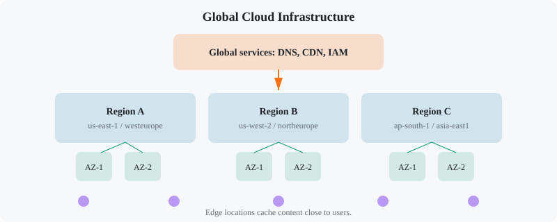

Cloud Providers: AWS / Azure / GCP Fundamentals
Chapter 1
Introduction
Amazon Web Services (AWS), Microsoft Azure, and Google Cloud Platform (GCP) are the three dominant public clouds. They each provide compute, storage, networking, databases, identity, and machine-learning services. This tutorial teaches the core building blocks side-by-side, so you can understand the concepts once and translate them across providers.
Before you start
- Comfortable with the command line and basic networking terms (IP, DNS, subnet).
- Understand what a virtual machine is.
- Have (or be ready to create) free-tier accounts on AWS, Azure, and GCP for the capstone.
What you'll learn
- ✓ Global regions and availability zones
- ✓ IAM: users, roles, policies, and service principals
- ✓ Virtual machines, autoscaling, and container compute
- ✓ Object, block, and file storage
- ✓ VPCs, subnets, load balancers, and DNS
- ✓ Managed relational and NoSQL databases
- ✓ Serverless functions and managed Kubernetes
- ✓ Monitoring, billing, and security controls
Concept-to-service map
| Concept | AWS | Azure | GCP |
|---|---|---|---|
| Virtual machine | EC2 | Virtual Machines | Compute Engine |
| Object storage | S3 | Blob Storage | Cloud Storage |
| Block storage | EBS | Managed Disks | Persistent Disk |
| Virtual network | VPC | Virtual Network (VNet) | VPC |
| Load balancer | ELB / ALB | Load Balancer | Cloud Load Balancing |
| Managed Kubernetes | EKS | AKS | GKE |
| Serverless functions | Lambda | Functions | Cloud Functions |
| Managed PostgreSQL | RDS | Azure Database for PostgreSQL | Cloud SQL |
| IAM identity | IAM Role | Service Principal / Managed Identity | Service Account |
Which AWS service is the equivalent of Azure Blob Storage and Google Cloud Storage?
Chapter 2
Regions, Availability Zones & Global Networks
Cloud providers divide the world into regions (geographic areas like us-east-1 or westeurope). Each region contains multiple availability zones (AZs) — physically separate data centers with independent power, cooling, and networking. Global services like DNS and content delivery sit above regions.

Regions contain AZs; edge locations cache content close to users.
Side-by-side: regions and zones
| Concept | AWS | Azure | GCP |
|---|---|---|---|
| Region example | us-east-1 (N. Virginia) | westeurope (Netherlands) | us-central1 (Iowa) |
| Availability zone | us-east-1a, us-east-1b, us-east-1c | westeurope-1, westeurope-2, westeurope-3 | us-central1-a, us-central1-b, us-central1-c |
| Edge / CDN | CloudFront | Azure Front Door / CDN | Cloud CDN (Cloud Front in AWS) |
| Global load balancing | Global Accelerator, Route 53 | Azure Front Door, Traffic Manager | Cloud Load Balancing (Global) |
| Private global network | AWS Global Network | Azure Global Network | Google Global Backbone |
AWS
AWS launched us-east-1 in 2006 and now has 30+ regions. Each region has at least 3 AZs. Choose a region based on latency, compliance, and service availability; some newer services launch first in specific regions.
Azure
Azure has 60+ regions and is strong in enterprise and government clouds. Regions are paired for disaster recovery (e.g., West US paired with East US), and many services offer zone-redundant options.
GCP
GCP has fewer regions than AWS or Azure but emphasizes a private global fiber backbone. Live migration of VMs and custom machine types are differentiators for Compute Engine.
# List AWS AZs
aws ec2 describe-availability-zones --region us-east-1
# List Azure locations
az account list-locations --query "[].name" -o table
# List GCP zones gcloud compute zones listChapter 3
Identity & Access Management
IAM controls who can do what. All three clouds share the same core ideas: identities (users, groups, service accounts), policies (JSON or YAML permission documents), and roles (temporary credentials attached to resources). The golden rule is least privilege: grant only the permissions required.
Side-by-side: IAM concepts
| Concept | AWS | Azure | GCP |
|---|---|---|---|
| Identity for a person | IAM User | Azure AD User | Google Workspace / Cloud Identity user |
| Identity for an app/workload | IAM Role | Service Principal / Managed Identity | Service Account |
| Permission document | IAM Policy (JSON) | Role Definition (JSON) | IAM Policy (YAML/JSON) |
| Temporary credentials | STS AssumeRole | Azure AD token | IAM Service Account token |
| Resource organization | Organizations, OUs | Management Groups, Subscriptions | Organizations, Folders, Projects |
| Federated login | IAM Identity Center (SSO) | Azure AD / Entra ID | Cloud Identity / Workspace SSO |
// AWS
IAM policy: read-only S3
{ "Version": "2012-10-17",
"Statement": [{ "Effect": "Allow",
"Action": ["s3:GetObject"],
"Resource": "arn:aws:s3:::my-bucket/*" }
]
}// Azure
custom role: VM reader
{ "Name": "VM Reader",
"Actions": [ "Microsoft.Compute/virtualMachines/read" ],
"NotActions": [],
"DataActions": [],
"AssignableScopes": ["/subscriptions/00000000-0000-0000-0000-000000000000"]
}# GCP IAM
storage object viewer
roles/storage.objectViewer
- serviceAccount:app@project.iam.gserviceaccount.comIn GCP, what is the workload equivalent of an AWS IAM Role?
Chapter 4
Compute Services
Compute is the most used cloud service category. Providers offer virtual machines, managed container orchestration, serverless functions, and specialized GPU/AI instances. The trick is matching the right compute option to your workload.
Side-by-side: compute options
| Option | AWS | Azure | GCP |
|---|---|---|---|
| Virtual machine | EC2 | Virtual Machines | Compute Engine |
| VM scale / autoscaling | Auto Scaling Groups | Virtual Machine Scale Sets | Managed Instance Groups |
| Spot / preemptible VMs | Spot Instances | Spot Virtual Machines | Spot VMs / Preemptible VMs |
| Bare metal | Bare Metal | BareMetal Infrastructure | Bare Metal Solution |
| Managed Kubernetes | Elastic Kubernetes Service (EKS) | Azure Kubernetes Service (AKS) | Google Kubernetes Engine (GKE) |
| Serverless functions | Lambda | Azure Functions | Cloud Functions |
| Serverless containers | Fargate | Container Instances | Cloud Run |
| Platform-as-a-Service | Elastic Beanstalk | App Service | App Engine |
| GPU / AI training | P3/P4/G5 instances, SageMaker | NC/ND series, Azure ML | A2/A3 VMs, Vertex AI |
AWS EC2 details
- Instance families: T (burstable), M (general), C (compute), R (memory), G/P (GPU).
- AMIs are the disk images used to launch instances.
- User data scripts run at first boot for automation.
- Spot Instances can save up to 90% but can be interrupted.
Azure VM details
- Series: Bs (burstable), Dv5 (general), F (compute), E (memory), N (GPU).
- VMs live inside a VNet and NIC; public IPs are optional.
- Availability Sets protect against rack/fault-domain failures.
- Azure Hybrid Benefit lets you bring existing Windows licenses.
GCP Compute Engine details
- Machine types: E2 (cost-optimized), N2/N2D (general), C2/C3 (compute), M3 (memory).
- Custom machine types let you pick exact vCPU and memory.
- Live migration moves VMs during host maintenance without reboot.
- Sustained use discounts apply automatically.
# AWS: launch a t3.micro EC2 instance
aws ec2 run-instances --image-id ami-0123456789abcdef0 --count 1 --instance-type t3.micro \
--key-name my-key --security-group-ids sg-12345 --subnet-id subnet-12345
# Azure: create a D2s v5 VM
az vm create --resource-group myRG --name myVM --image Ubuntu2204 \
--size Standard_D2s_v5 --admin-username azureuser --generate-
ssh-keys
# GCP: create an e2-medium VM gcloud compute instances create my-vm --zone=us-central1-a --machine-type=e2-medium \
--image-family=ubuntu-2204-lts --image-project=ubuntu-os-cloudWhen to use what
- VMs: legacy apps, full control over OS, long-running workloads.
- Managed Kubernetes (EKS/AKS/GKE): microservices, containerized apps, multi-service teams.
- Serverless functions (Lambda/Azure Functions/Cloud Functions): event-driven glue, APIs with sporadic traffic.
- Serverless containers (Fargate/Container Instances/Cloud Run): containers without managing nodes, HTTP services.
Chapter 5
Storage Services
Cloud storage comes in three main flavors: object (flat, scalable, accessed over HTTP), block (raw disks attached to VMs), and file (shared network file systems). Each provider also offers tiering, lifecycle, and archival options to reduce cost.
Side-by-side: storage services
| Flavor | AWS | Azure | GCP |
|---|---|---|---|
| Object storage | S3 | Blob Storage | Cloud Storage |
| Block storage for VMs | EBS | Managed Disks | Persistent Disk |
| Shared file storage | EFS | Azure Files | Filestore |
| Archive / cold storage | Glacier / Glacier Deep Archive | Archive / Cool / Hot Blob tiers | Archive / Nearline / Coldline |
| High-performance file | FSx for Lustre | Azure HPC Cache | Parallelstore |
| Hybrid / on-prem sync | Storage Gateway | Azure File Sync / StorSimple | Cloud Storage for Firebase / Transfer Appliance |
Amazon S3
S3 is the oldest and most mature object store. Buckets are globally unique. Storage classes include Standard, Intelligent-Tiering, Standard-IA, One Zone-IA, Glacier Instant Retrieval, Glacier Flexible Retrieval, and Glacier Deep Archive. Versioning, lifecycle policies, and bucket policies are essential tools.
Azure Blob Storage
Blob Storage supports block blobs, page blobs (for VM disks), and append blobs. Access tiers are Hot, Cool, Cold, and Archive. Azure Data Lake Storage Gen2 adds hierarchical namespaces and analytics integration.
Google Cloud Storage
Cloud Storage classes include Standard, Nearline, Coldline, and Archive. It offers uniform bucket-level access for simpler IAM and Autoclass for automatic tier management. Strong global consistency is a common selling point.
# AWS S3: create bucket, upload, set lifecycle
aws s3 mb s3://my-uniq-bucket
aws s3 cp file.txt s3://my-uniq-bucket/
aws s3api put-bucket-lifecycle --bucket my-uniq-bucket --lifecycle-configuration file://lifecycle.json# Azure Blob: create storage account and container
az storage account create --name mystorageacct --resource-group myRG --sku Standard_LRS
az storage container create --name mycontainer --account-name mystorageacct
az storage blob upload --file file.txt --container-name mycontainer --name file.txt --account-name mystorageacct# GCP Cloud Storage: create bucket, upload, set lifecycle
gsutil mb -l us-central1 gs://my-uniq-bucket
gsutil cp file.txt gs://my-uniq-bucket/
gsutil lifecycle set lifecycle.json gs://my-uniq-bucketStorage design checklist
- Choose the right access tier; most objects become cold within 30 days.
- Block public access by default; use IAM or signed URLs.
- Enable versioning if you need recovery from accidental deletes.
- Encrypt data at rest (provider-managed keys are default; bring your own key for compliance).
- Use lifecycle rules to move or delete old objects automatically.
Chapter 6
Networking Services
Cloud networking lets you build isolated virtual networks, connect on-premises data centers, distribute traffic, and protect resources with firewalls. The core concepts are the same across providers; only the service names differ.
Side-by-side: networking services
| Concept | AWS | Azure | GCP |
|---|---|---|---|
| Virtual network | VPC | Virtual Network (VNet) | VPC |
| Isolated subnet | Subnet | Subnet | Subnet |
| Public IP | Elastic IP / Public IP | Public IP | External IP |
| DNS service | Route 53 | Azure DNS / Private DNS | Cloud DNS |
| Layer 4 load balancer | Network Load Balancer (NLB) | Azure Load Balancer | Network Load Balancing |
| Layer 7 load balancer | Application Load Balancer (ALB) | Azure Application Gateway | HTTP(S) Load Balancer |
| Firewall | Security Groups + NACLs + AWS Network Firewall | NSGs + Azure Firewall | Firewall rules + Cloud Firewall + Cloud Armor |
| VPN to on-prem | Site-to-Site VPN / Client VPN | VPN Gateway / Virtual WAN | Cloud VPN |
| Private dedicated link | Direct Connect | ExpressRoute | Cloud Interconnect |
| Private connectivity to PaaS | VPC Endpoints / PrivateLink | Private Link / Service Endpoints | Private Service Connect / Private Google Access |
AWS VPC
A VPC is a private network in one AWS region. Subnets map to AZs. Route tables control traffic flow. Internet gateways give public access; NAT gateways let private subnets reach the internet. Security groups are stateful firewalls attached to resources.
Azure VNet
A VNet is scoped to a region and subscription. Subnets are tied to the VNet (not directly to AZs in the same way). Network Security Groups filter traffic by 5-tuple. Azure Firewall is a managed, stateful firewall with threat intelligence.
GCP VPC
GCP VPCs are global by default — subnets can span regions. Firewall rules are global unless restricted. Cloud Load Balancing is anycast, so a single global IP can front multiple regions.
Networking best practices
- Use private subnets for databases and application backends.
- Place load balancers in public subnets and point them to private targets.
- Restrict security groups / NSGs / firewall rules to least privilege.
- Use DNS and health checks to build resilient multi-region architectures.
- Prefer private connectivity (VPC endpoints, Private Link, PSC) for PaaS traffic.
Chapter 7
Managed Databases
Managed databases remove operational toil: backups, patching, failover, and scaling are handled by the provider. All three clouds offer relational, NoSQL, cache, and data-warehouse services.
Side-by-side: database services
| Type | AWS | Azure | GCP |
|---|---|---|---|
| Managed PostgreSQL | RDS for PostgreSQL | Azure Database for PostgreSQL | Cloud SQL for PostgreSQL |
| Managed MySQL | RDS for MySQL | Azure Database for MySQL | Cloud SQL for MySQL |
| Managed SQL Server | RDS for SQL Server | Azure SQL Database / SQL Managed Instance | Cloud SQL for SQL Server |
| NoSQL document store | DynamoDB | Azure Cosmos DB | Firestore |
| Wide-column / key-value | DynamoDB, Keyspaces | Cosmos DB Table API | Bigtable |
| Managed cache | ElastiCache (Redis/Memcached) | Azure Cache for Redis | Memorystore |
| Data warehouse | Redshift | Synapse Analytics | BigQuery |
| Time-series DB | Timestream | Azure Data Explorer | BigQuery / Cloud Monitoring |
Amazon RDS
RDS supports multi-AZ standby, automated backups, read replicas, and parameter groups. Aurora is a MySQL/PostgreSQL-compatible engine with up to 15 read replicas and distributed storage.
Azure SQL Database
Azure SQL Database is a fully managed SQL Server with serverless and hyperscale tiers. It offers built-in high availability, automated backups, and Intelligent Query Processing.
Cloud SQL / Spanner
Cloud SQL is managed PostgreSQL, MySQL, and SQL Server. Spanner is a globally distributed, strongly consistent relational database for planet-scale apps.
# AWS RDS: create a PostgreSQL instance
aws rds create-db-instance --db-instance-identifier mydb --db-instance-class db.t3.micro \
--engine postgres --master-username admin --master-user-password Secret123! \
--allocated-storage 20
# Azure: create a PostgreSQL flexible server
az postgres flexible-server create --name mypg --resource-group myRG --location westeurope \
--admin-user azureuser --admin-password Secret123! --sku-name Standard_B1ms
# GCP: create a Cloud SQL PostgreSQL instance gcloud sql instances create mypg --database-version=POSTGRES_15 --tier=db-f1-micro \
--region=us-central1 --storage-size=20GBChapter 8
Serverless & Containers
Serverless lets you run code without provisioning servers. Container services let you deploy Docker images without managing the control plane. These layers are where most modern applications are built.
Side-by-side: serverless and container services
| Use case | AWS | Azure | GCP |
|---|---|---|---|
| Function-as-a-Service | Lambda | Azure Functions | Cloud Functions |
| Container-to-HTTP | Fargate + App Runner | Container Apps / Container Instances | Cloud Run |
| Managed Kubernetes | EKS | AKS | GKE |
| Event bus | EventBridge | Event Grid | Eventarc |
| Pub/Sub messaging | SQS / SNS | Service Bus / Queue Storage | Pub/Sub |
| Workflow orchestration | Step Functions | Logic Apps | Workflows / Cloud Composer |
| API gateway | API Gateway | API Management | Apigee / API Gateway |
AWS Lambda
Lambda runs code in response to events. Runtime choices include Node.js, Python, Java, Go, Ruby, and custom containers. Pay per request and per duration (ms). Cold starts and concurrency limits are key design considerations.
Azure Functions
Functions support consumption, premium, and dedicated plans. Durable Functions add stateful orchestration. Great for event-driven Azure integrations and bindings to Blob, Queue, Cosmos DB, etc.
Cloud Run
Cloud Run is a standout GCP service: it takes any container and serves it over HTTP with scale-to-zero. It supports custom domains, gradual rollouts, and VPC connectivity. Cloud Functions builds on Cloud Run under the hood.
# Deploy a container to Cloud Run (GCP) gcloud run deploy hello --image gcr.io/PROJECT/hello --region us-central1 --allow-unauthenticated
# Deploy to AWS App Runner
aws apprunner create-service --service-name hello --source-configuration \
ImageRepository={ImageIdentifier=123456789012.dkr.ecr.us-east-1.amazonaws.com/hello:latest,ImageRepositoryType=ECR}
# Deploy to Azure Container Apps
az containerapp create --name hello --resource-group myRG --environment myenv \
--image myregistry.azurecr.io/hello:latest --target-port 8080 --ingress externalChapter 9
Observability & Security
You cannot operate what you cannot see. Each cloud provides monitoring, logging, tracing, and security controls. Use them together to detect, investigate, and prevent incidents.
Side-by-side: observability and security
| Capability | AWS | Azure | GCP |
|---|---|---|---|
| Metrics | CloudWatch | Azure Monitor Metrics | Cloud Monitoring |
| Logs | CloudWatch Logs | Azure Monitor Logs / Log Analytics | Cloud Logging |
| Distributed tracing | X-Ray | Application Insights | Cloud Trace |
| Profiler | CodeGuru Profiler | Application Insights Profiler | Cloud Profiler |
| SIEM / security analytics | Security Lake / OpenSearch | Sentinel | Chronicle / Security Command Center |
| Secrets manager | Secrets Manager / Parameter Store | Azure Key Vault | Secret Manager |
| Certificate manager | AWS Certificate Manager | App Service Certs / Key Vault | Certificate Manager |
| DDoS / WAF | Shield / WAF | DDoS Protection / WAF | Cloud Armor |
| Compliance scans | Security Hub / Config | Defender for Cloud / Policy | Security Command Center |
AWS CloudWatch
CloudWatch collects metrics, logs, and events. Alarms trigger actions. CloudWatch Logs Insights lets you query logs with SQL-like syntax. X-Ray traces requests across Lambda, API Gateway, and ECS.
Azure Monitor
Azure Monitor is a unified observability platform. Application Insights adds APM for apps. Log Analytics workspaces run KQL queries across logs from many Azure services.
Google Cloud Operations
Cloud Monitoring, Logging, Trace, Profiler, and Error Reporting form the operations suite. BigQuery exports make long-term log analysis cheap and powerful.
# AWS: put a custom metric and create an alarm
aws cloudwatch put-metric-data --namespace MyApp --metric-name Latency --value 120 --unit Milliseconds
aws cloudwatch put-metric-alarm --alarm-name high-latency --metric-name Latency --namespace MyApp \
--statistic Average --threshold 200 --comparison-operator GreaterThanThreshold --evaluation-periods 2
# Azure: query Log Analytics with KQL
az monitor log-analytics query -w "workspace-id" --analytics-query "Heartbeat | summarize count() by Computer"
# GCP: create an alerting policy gcloud alpha monitoring policies create --policy-from-file="policy.json"Security essentials
- Rotate credentials; prefer IAM roles / managed identities / service accounts over long-lived keys.
- Store secrets in a dedicated secrets manager, never in source code.
- Enable CloudTrail / Activity Log / Audit Logs to record API activity.
- Use encryption at rest and in transit by default.
- Regularly scan resources with the provider's security posture tool (Security Hub / Defender / Security Command Center).
Chapter 10
Pricing & Cost Management
Cloud pricing is granular. Compute is usually billed per second or hour; storage per GB-month; data transfer per GB; and requests per million. Understanding pricing models helps you avoid surprises.
Side-by-side: pricing concepts
| Concept | AWS | Azure | GCP |
|---|---|---|---|
| Free tier | 12 months + always-free | 12 months + always-free | $300 credit + always-free |
| Compute discounts | Savings Plans, Reserved Instances, Spot | Reserved Instances, Savings Plans, Spot | Sustained use, Committed use, Spot |
| Billing alerts | Budgets | Cost Alerts / Budgets | Budgets |
| Cost explorer | Cost Explorer / CUR | Cost Management + Advisor | Cloud Billing Reports |
| Resource tagging | Cost Allocation Tags | Cost Allocation Tags | Labels |
AWS cost tips
Use Savings Plans for predictable workloads; use Spot for fault-tolerant batch jobs; enable S3 Intelligent-Tiering; review Cost Explorer monthly; and delete unattached EBS volumes.
Azure cost tips
Use Hybrid Benefit for Windows/SQL licenses; right-size VMs with Advisor; set budget alerts; reserve capacity for 1 or 3 years; and shut down dev VMs with automation.
GCP cost tips
Use Preemptible and Spot VMs for batch jobs; leverage sustained-use discounts; use Committed Use Discounts for steady workloads; and export billing to BigQuery for analysis.
Chapter 11
Real-World Systems
Major companies often use more than one provider or pick one for strategic reasons. These examples show how cloud choice maps to business and technical requirements.
Netflix on AWS
Netflix runs almost entirely on AWS. It uses S3 for content storage, EC2 for encoding pipelines, and a global CDN strategy. The elastic nature of AWS lets Netflix scale during viral shows without pre-buying hardware.
Lesson: pick the provider whose elasticity matches unpredictable traffic.
HSBC on Azure
HSBC moved significant workloads to Azure, driven by existing Microsoft enterprise agreements, hybrid identity with Azure AD, and strong compliance tooling. Azure's hybrid features eased on-premises integration.
Lesson: existing enterprise relationships and identity integration can drive cloud choice.
Spotify on GCP
Spotify chose GCP for data and machine learning. BigQuery powers analytics; Pub/Sub feeds event pipelines; and GKE runs services. GCP's data tooling and global backbone fit Spotify's scale.
Lesson: align provider strengths with your most important workload type.
Epic Games multi-cloud
Epic Games runs Fortnite across AWS and its own private infrastructure. They use AWS for bursting during live events and Fortnite's backend services, while keeping critical real-time game servers optimized in their own data centers.
Lesson: a hybrid or multi-cloud strategy can combine control with cloud elasticity.
Snap on GCP
Snap built Snapchat on GCP, leveraging App Engine, Datastore, and Bigtable in the early days. GCP's fully managed services let a small team scale to hundreds of millions of users.
Lesson: managed services can dramatically reduce early engineering overhead.
Toyota on AWS
Toyota uses AWS for connected car data, analytics, and machine learning. Kinesis ingests telemetry; S3 and Redshift store and analyze it; and SageMaker builds predictive models for maintenance.
Lesson: IoT + analytics + ML is a common modern cloud use case.
Chapter 12
Capstone: Deploy on Two Providers
Build the same small web application stack on AWS and GCP (or AWS and Azure). The goal is to feel the differences in CLI, naming, and console flow while reinforcing the underlying concepts: compute, storage, networking, and IAM.
1. What is this project?
You will deploy a simple static or containerized "Hello Cloud" application behind a load balancer with object storage for assets. You will do it twice — once on AWS and once on GCP or Azure — using the provider CLI. This comparison makes service names and patterns stick.
2. What it covers?
- Creating a VPC/VNet and public/private subnets.
- Launching a VM and installing a web server.
- Creating an object storage bucket and uploading assets.
- Configuring a security group / firewall rule.
- Adding a basic load balancer (if available in free tier).
- Cleaning up resources to avoid charges.
3. How it is done?
Step 1 — AWS path
# Create a VPC and subnet
aws ec2 create-vpc --cidr-block 10.0.0.0/16
aws ec2 create-subnet --vpc-id vpc-xxx --cidr-block 10.0.1.0/24
# Create an internet gateway and attach it
aws ec2 create-internet-gateway
aws ec2 attach-internet-gateway --internet-gateway-id igw-xxx --vpc-id vpc-xxx
# Launch an EC2 instance in the public subnet
aws ec2 run-instances --image-id ami-0123456789abcdef0 --count 1 \
--instance-type t2.micro --key-name my-key --security-group-ids sg-xxx --subnet-id subnet-xxx \
--user-data '#!/bin/bash
yum update -y
yum install -y httpd systemctl start httpd systemctl enable httpd echo "Hello from AWS" > /var/www/html/index.html'
# Create an S3 bucket and upload an asset
aws s3 mb s3://my-uniq-hello-bucket
aws s3 cp logo.png s3://my-uniq-hello-bucket/
# Clean up when done
aws ec2 terminate-instances --instance-ids i-xxx
aws s3 rb s3://my-uniq-hello-bucket --forceStep 2 — GCP path
# Create a VPC network and subnet gcloud compute networks create hello-net --subnet-mode=custom gcloud compute networks subnets create hello-subnet \
--network=hello-net --range=10.0.1.0/24 --region=us-central1
# Create a firewall rule for HTTP gcloud compute firewall-rules create allow-http \
--network=hello-net --allow=tcp:80 --source-ranges=0.0.0.0/0
# Launch a Compute Engine VM gcloud compute instances create hello-vm \
--zone=us-central1-a --machine-type=e2-micro \
--network=hello-net --subnet=hello-subnet \
--metadata-from-file startup-script=startup.sh \
--tags=http-server
# startup.sh installs
nginx and writes a page
# Create a Cloud Storage bucket and upload an asset
gsutil mb -l us-central1 gs://my-uniq-hello-bucket
gsutil cp logo.png gs://my-uniq-hello-bucket/
# Clean up when done gcloud compute instances delete hello-vm --zone=us-central1-a --quiet
gsutil rm -r gs://my-uniq-hello-bucketStep 3 — Azure path (alternative)
# Create a resource group, VNet, and subnet
az group create --name helloRG --location westeurope
az network vnet create --name helloVNet --resource-group helloRG --subnet-name helloSubnet
# Create a public IP and a VM
az vm create --resource-group helloRG --name helloVM --image Ubuntu2204 \
--size Standard_B1s --admin-username azureuser --generate-
ssh-keys \
--vnet-name helloVNet --subnet helloSubnet
# Open port 80
az vm open-port --resource-group helloRG --name helloVM --port 80
# SSH in and install
nginx
ssh azureuser@PUBLIC_IP
sudo
apt update &&
sudo
apt install -y
nginx
# Create a storage account and upload an asset
az storage account create --name hellostore123 --resource-group helloRG --sku Standard_LRS
az storage container create --name assets --account-name hellostore123
az storage blob upload --file logo.png --container-name assets --name logo.png --account-name hellostore123
# Clean up when done
az group delete --name helloRG --yes --no-waitStep 4 — Compare your experience
- Which CLI felt fastest for creating resources?
- Where did you need extra steps (resource group, storage account, etc.)?
- How did each console display networking and IAM?
- Which free-tier limits did you hit first?
4. What did we learn from this capstone project?
- Every provider has a VPC/VNet, subnets, firewalls, VMs, object storage, and IAM — but the names and CLI flows differ.
- Azure requires a resource group as a parent for almost every resource.
- GCP VPCs are global by default, while AWS VPCs and Azure VNets are regional.
- Object storage buckets are globally unique across all providers.
- Cleaning up resources is just as important as creating them to avoid unexpected bills.
5. How can I enhance this project in the future?
- Automate both deployments with Terraform and compare module structure across providers.
- Add a managed database and a load balancer to the stack.
- Deploy the same container to AWS App Runner, Azure Container Apps, and GCP Cloud Run.
- Set up budget alerts and tag/label every resource.
- Measure cold-start and request latency from multiple regions.
- Build a cost report comparing the two provider deployments.
Which statement is true when comparing AWS, Azure, and GCP networking?
Great work! Now automate everything you built with Terraform.
Continue to Terraform →